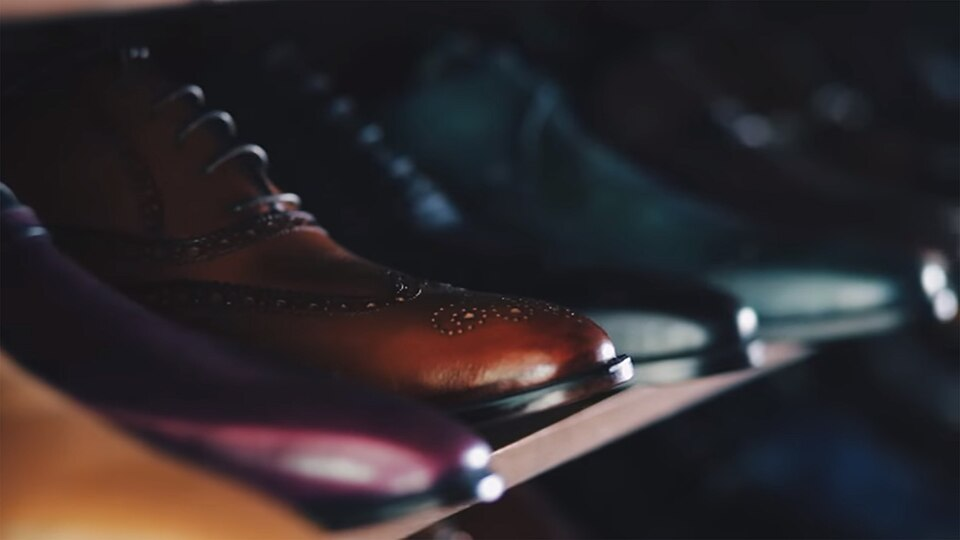
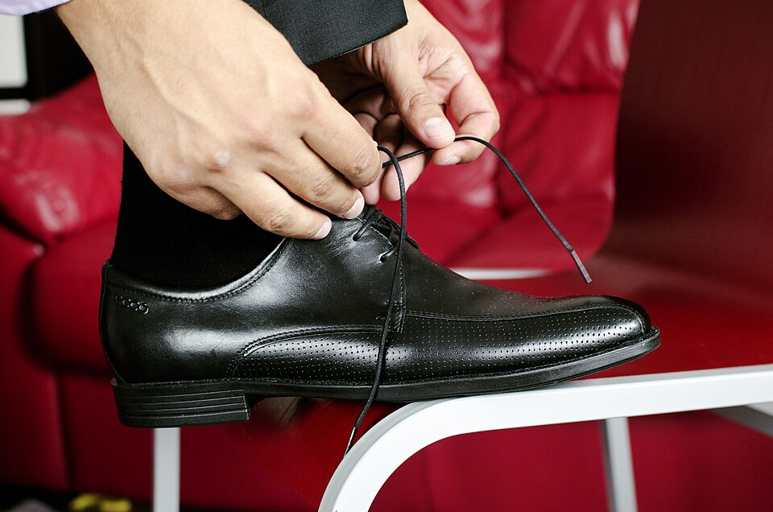
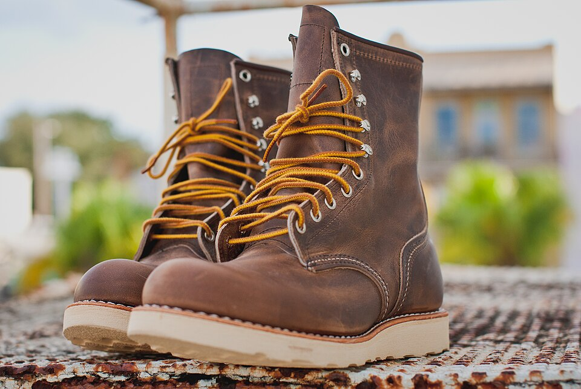
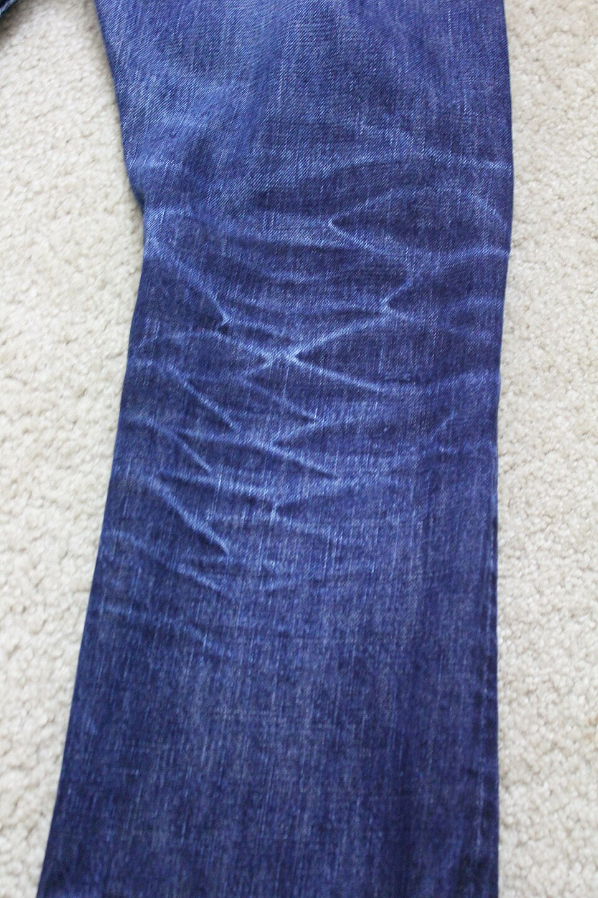
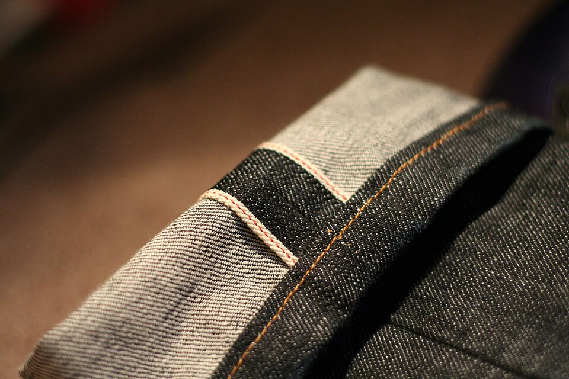
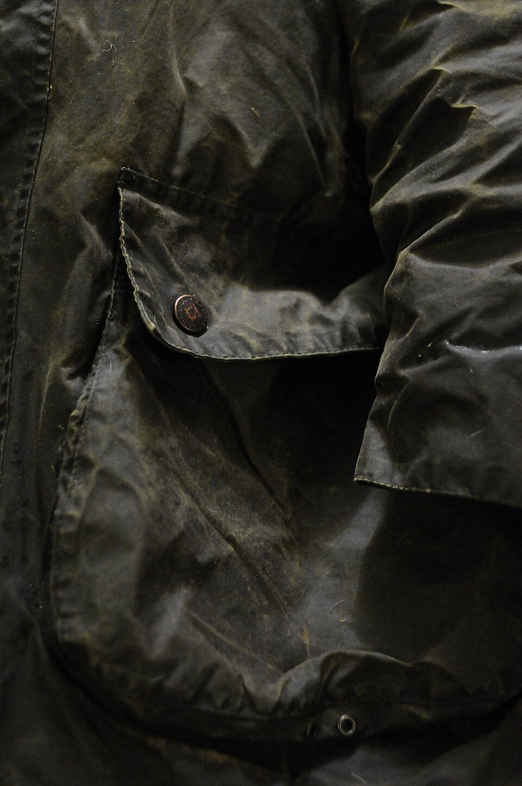
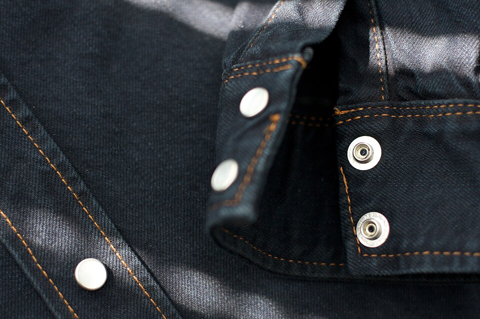
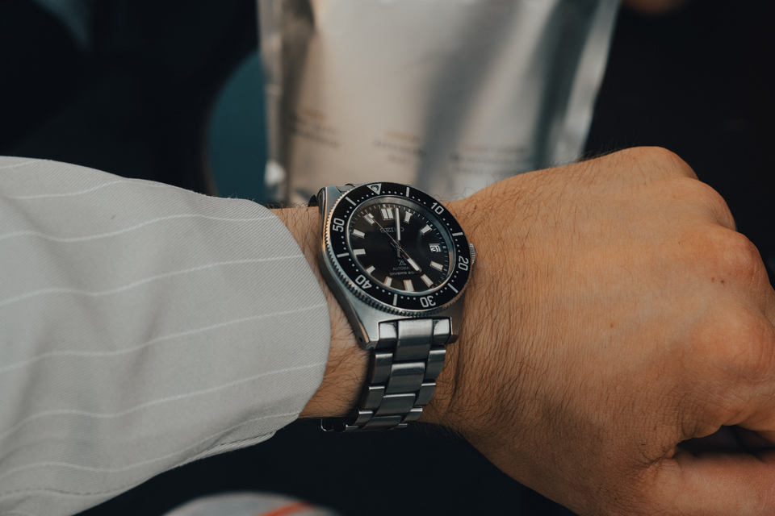
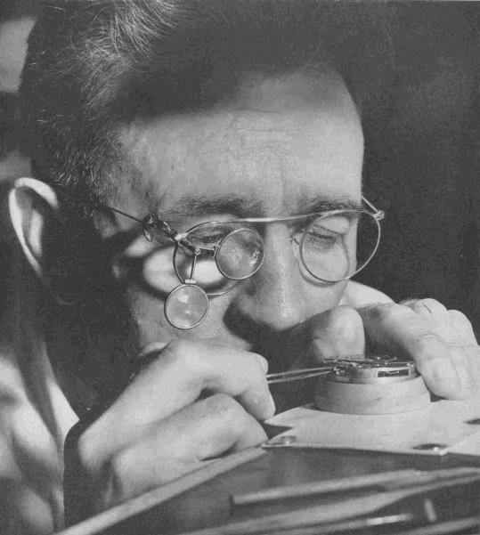
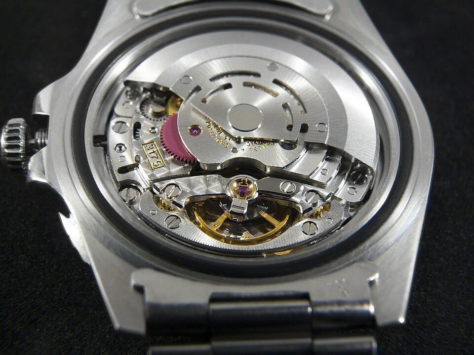

Made to wear. Made to last.
Explore repairable footwear, denim, outerwear, and mechanical watches with an eye on fit, maintenance, and materials.

Quality and repairability vary by model. Confirm construction, sizing, service availability, and costs before purchasing.
Footwear
Research fit, care, and resoling options for each model.

Illustrative leather shoe; not an Alden product.Alden
American-made footwear, including classic leather and shell cordovan styles.
Open resource ↗
Red Wing Heritage boots.Red Wing Heritage
Heritage boots and care resources.
Open resource ↗ Illustrative boots; not a Grant Stone product.Grant Stone
Welted footwear and leather-care information.
Open resource ↗Denim & outerwear
Learn material care and repair; fabric weight alone does not determine quality.

Illustrative raw denim; not an identified Iron Heart product.Iron Heart
Japanese denim and heavyweight clothing.
Open resource ↗
Illustrative selvedge denim; not a Pure Blue Japan product.Pure Blue Japan
Japanese denim and indigo-dyed clothing.
Open resource ↗
A Barbour jacket.Barbour
Waxed jackets and garment care.
Open resource ↗
Illustrative denim jacket detail.Heddels
Independent articles on denim, materials, and heritage clothing.
Open resource ↗Watches & watchmaking
Compare movement, service, fit, and total ownership cost.

A Seiko Prospex watch.Seiko Prospex
Tool-watch collections and product information.
Open resource ↗ A Hamilton Khaki Field watch.Hamilton Khaki Field
Field-watch collection and product details.
Open resource ↗
Historical watchmaking photo; not Hodinkee.Hodinkee
Watch journalism, collecting, and horology.
Open resource ↗
Illustrative watch movement.Worn & Wound
Watch reviews and collecting guides.
Open resource ↗Photo credits
Photos are resized and may be cropped. Illustrative images do not imply an endorsement or show the named brand unless stated.
- Leather shoes and boots (Unsplash).jpg: Dương Trần Quốc fanhungry, Wikimedia Commons, CC0.
- Mens dress shoes.jpg: Petar Milošević, Wikimedia Commons, CC BY-SA 4.0.
- Red Wing Heritage boots.jpg: A Continuous Lean, Wikimedia Commons, CC BY 2.0.
- Jeans and Boots, a perfect pair.jpg: William Christiansen, Wikimedia Commons, CC BY 2.0.
- Raw denim honeycomb fades.jpg: Leondelrosario, Wikimedia Commons, CC BY-SA 3.0.
- Selvagedenim.jpg: Liface at English Wikipedia, Wikimedia Commons, CC BY-SA 3.0.
- Barbour jacket 02.jpg: Steven Lilley, Wikimedia Commons, CC BY-SA 2.0.
- Denim jacket cuff closeup.jpg: section215, Wikimedia Commons, CC BY 2.0.
- Seiko Prospex SPB143J1.png: Deerpeter, Wikimedia Commons, CC BY-SA 4.0.
- Hamilton Khaki Field Mechanical 39.jpg: Giordano Tonelli, Wikimedia Commons, CC BY-SA 4.0.
- Elgin watchmaker.jpg: Elgin National Watch Company and modifications by Wayne Schlitt, Wikimedia Commons, Public domain.
- Mechanics movement feinmechanik wrist watch clock automatic gmt master gmt-932709.jpg!d.jpg: Unknown author, Wikimedia Commons, CC0.